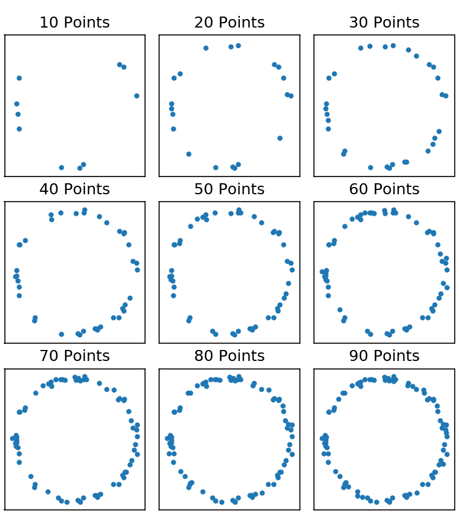

People have been arguing over the “real” resolution of single molecule localization microscopy (SMLM) since it’s inception1 (see the many references in Legant et al.2). New comers are often wowed by the insanely small localization precisions achievable with modern SMLM microscopes and dyes which can routinely drop below 10 nm (a factor of nearly 20 fold below the diffraction limit 🤯). However, it is clear to “those skilled in the art” that this merely represents the lower bound for the actual resolution of one’s image.
Early on in the debate, many made frequent appeals to the concept of Nyquist sampling which simply states that you must sample at twice the highest frequency you’re hoping to measure. Because images are made up of spatial frequencies the argument is that you need a localization density of at least twice the highest frequency you’re trying to measure. For instance, let’s say you wanted to measure ER tubules of approximately 50 nm in diameter then you’d need at least one localization every 25 nm or 40 localizations every micron — in a single dimension! If you’d like to measure such a structure in 3D then you’d need 64,000 molecules per cubic micron! That means you’ll need millions or even billions2 of localizations to achieve the resolution you want.
Unfortunately, the argument laid out above is really a best case scenario and even if you achieved such a high localization rate your signal to noise ratio (SNR) would be 1. To understand why, consider the simple model shown in Fig. 1 below. Here our sample is a one dimensional square wave of period $L$ (wavelength) and height $S$ (signal) offset by an amount $B$ (background). The background is representative of non-specific labeling or junk during imaging.

A square wave of period (wavelength) $L$ shown as the thick orange line. The dashed orange line is the background component of intensity $B$ and the green solid line is the signal component of intensity $S$
A simple argument would lead you to believe that you want a single molecule localized per period meaning that our desired labeling density is $\rho = 1 / L$. But this doesn’t take into account any noise sources. It’s reasonable to assume that protein production, labeling, and imaging (i.e. detection, localization, etc.) all lead to roughly Poisson statistics for localization density. A Poisson distribution has a well defined variance, namely $\sigma^2 = \mu$ where $\mu$ is the mean value, thus the standard deviation is $\sigma = \sqrt{\mu}$. In the case of one localization per period that means you have an SNR of 1 😱.3 If you wanted to have an SNR of 2 you’d need 4 localizations, on average, per period. Referring back to our example of ER tubules above this translates to 4 million localizations per cubic micron.4
Including background noise isn’t much harder. Assuming the background is also Poisson distributed we can use the Skellam distribution setting $\mu_1 = S + B$ and $\mu_2 = B$ which gives an SNR of
$$ SNR = \frac{\mu_1 - \mu_2}{\sqrt{\mu_1 + \mu_2}} = \frac{S}{\sqrt{S + 2B}} $$
We can rearrange the above equation, setting $S$ equal to the number of localized molecules per period $N$, to read
$$ N = \frac{SNR^2}{2}\left(1 + \sqrt{1 + \frac{8 B}{SNR^2}}\right) $$
For example, if you want and SNR of 3 and your background is 2 molecules, on average, then you’d need an average of 12 molecules per period. Again, going back to the ER example that means you’d need 111 million localizations per cubic micron.5
We can compare this analytical formula to the simulations of Legant et al.2 (see supplemental figures 1 and 3 therein). In that publication a sinusoidal pattern was used but we can normalize the two by averaging the sinusoid’s intensity over half periods and using the resulting peak-to-peak intensity as our $S$. For a sinusoid of amplitude $A$ (i.e. $y(x) = A \sin x$) The integrated amplitude is $2 A /\pi$. Therefore our normalization factor is $\pi / 4$.
For SI figure 1 we have the following analytical SNRs:
- 0.89
- 1.25
- 1.99
- 2.8
For SI figure 3 we have the following analytical SNRs:
- 1.31
- 1.05
- 1.86
- 1.49
Conclusion
Getting really good real resolution in SMLM (i.e. anything below ~50 nm average in $x$, $y$, and $z$) is really hard and requires minimal background and really really good labeling density.6 One saving grace is that this argument assumes you have absolutely no prior knowledge about the structure you’re imaging. Take for example Fig 2. below. It doesn’t take a whole lot of points before it becomes obvious we’re imaging a circle. It takes many more points to get an accurate measure of the width of the circle. But once you’re fairly confident that it’s a circle you can perform a radial average to determine the width; this type of methodology has been used to great effect before.7 In short, the resolution of your image is not equivalent to your localization precision and resolution, in the traditional sense, may not even be relevant to what you’re trying to measure.

Randomly sampling points on a circle.
-
E. Betzig, G. H. Patterson, R. Sougrat, O. W. Lindwasser, S. Olenych, J. S. Bonifacino, M. W. Davidson, J. Lippincott-Schwartz, H. F. Hess, Imaging Intracellular Fluorescent Proteins at Nanometer Resolution. Science. 313, 1642–1645 (2006). ↩︎
-
W. R. Legant, L. Shao, J. B. Grimm, T. A. Brown, D. E. Milkie, B. B. Avants, L. D. Lavis, E. Betzig, High-density three-dimensional localization microscopy across large volumes. Nat Meth. 13, 359–365 (2016) ↩︎
-
Noting that $SNR = \mu/\sigma$. PS: I personally would never try to make a scientific argument based on data with an SNR of 1. ↩︎
-
Remember this would be 4M / µm$^3$ only for the actual ER tubule. Considering that the mean diameter of a tubule is 50 nm this equates to roughly 8k molecules per micron of tubule. ↩︎
-
This equates to roughly 220k molecules per micron of tubule. Also, 1 cubic micron is roughly 500 linear microns of ER tubule 😅. ↩︎
-
One of the reasons regular EM is so damn good is due to the fact that the labeling density (e.g. osmium staining) is so high. Even if you could build an optical microscope with the resolution of an electron microscope you’d never get to take advantage of it. ↩︎
-
A. Szymborska, A. de Marco, N. Daigle, V. C. Cordes, J. A. G. Briggs, J. Ellenberg, Nuclear Pore Scaffold Structure Analyzed by Super-Resolution Microscopy and Particle Averaging. Science. 341, 655–658 (2013). ↩︎